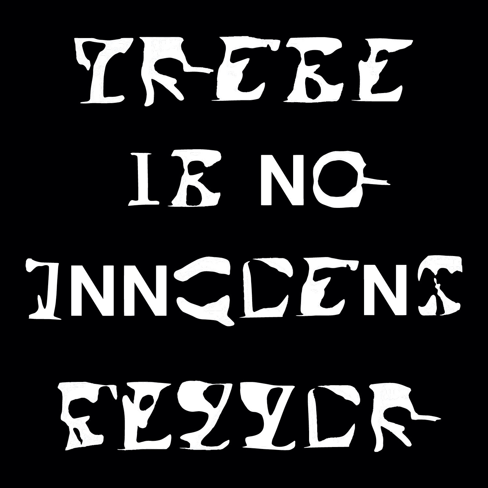
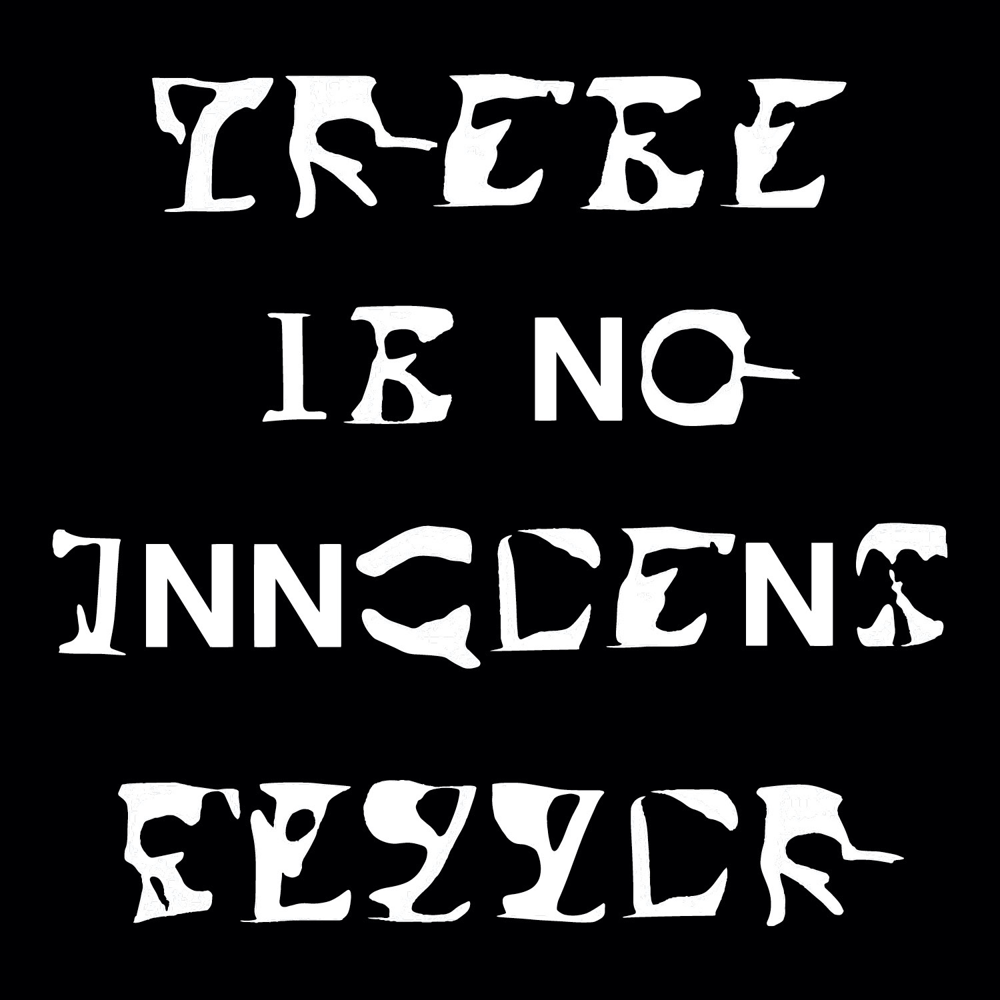
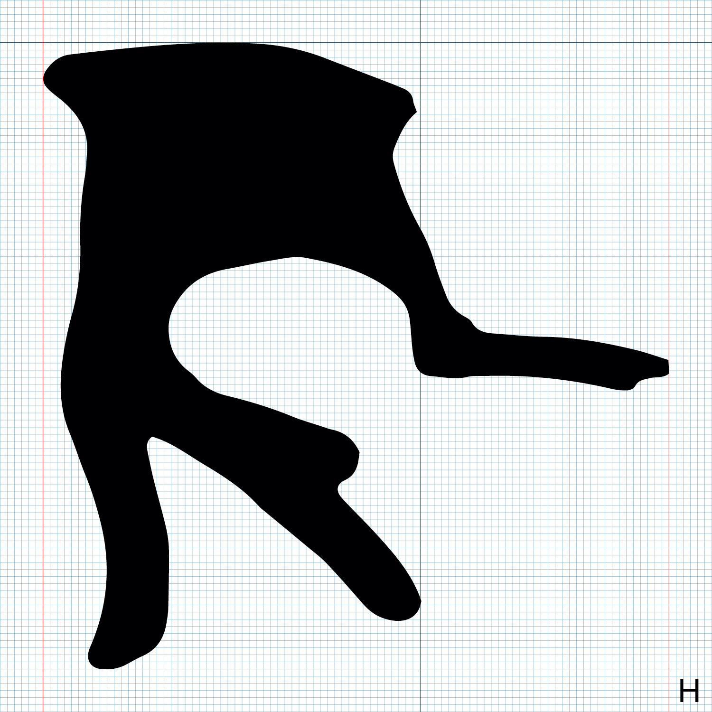
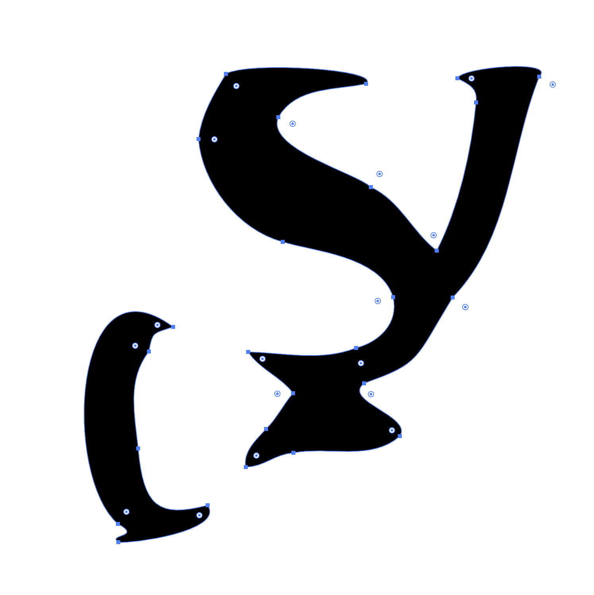

Nina Yuchi
Deceptive Speech
Digital design, typography
This series aims to visualize the idea of deconstructing language. According to Ellen Lupton and J. Abbot Miller, speech, writing, and language can never hold an objective truth. Instead, they intentionally
or unintentionally distort reality.
I used RunwayML to generate the new forms, using hundreds of letters in different typefaces as the input data. As the AI tried to recognize patterns in the forms, it made seemingly senseless connections leading to the creation of new, unrecognizable letter forms. I then used a program to “read” these new glyphs as letters, again generating new and absurd connections. This represents the nuanced and arbitrary graphic nature of language.
 


